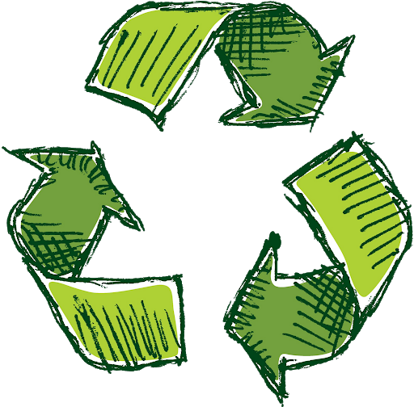

log in



Benefits of Recycling
Reduces the amount of waste sent to landfills and incinerators
Conserves natural resources such as timber, water and minerals
Increases economic security by tapping a domestic source of materials
Prevents pollution by reducing the need to collect new raw materials
Saves energy
Supports American manufacturing and conserves valuable resources
Helps create jobs in the recycling and manufacturing industries in the United States
Manufacturing
More and more of today's products are being manufactured with recycled content. Common household items that contain recycled materials include the following:
Newspapers and paper towels
Aluminum, plastic, and glass soft drink containers
Steel cans
Plastic laundry detergent bottles
Recycled materials are also used in new ways such as recovered glass in asphalt to pave roads or recovered plastic in carpeting and park benches.
Recycling Creates Jobs
EPA released significant findings on the economic benefits of the recycling industry with an update to the national Recycling Economic Information (REI) Study in 2016. This study analyzes the numbers of jobs, wages and tax revenues attributed to recycling. The study found that in a single year, recycling and reuse activities in the United States accounted for:
681,000 jobs
$37.8 billion in wages; and
$5.5 billion in tax revenues.
This equates to 1.17 jobs per 1,000 tons of materials recycled and $65.23 in wages and $9.42 in tax revenue for every ton of materials recycled
Source: www.epa.gov